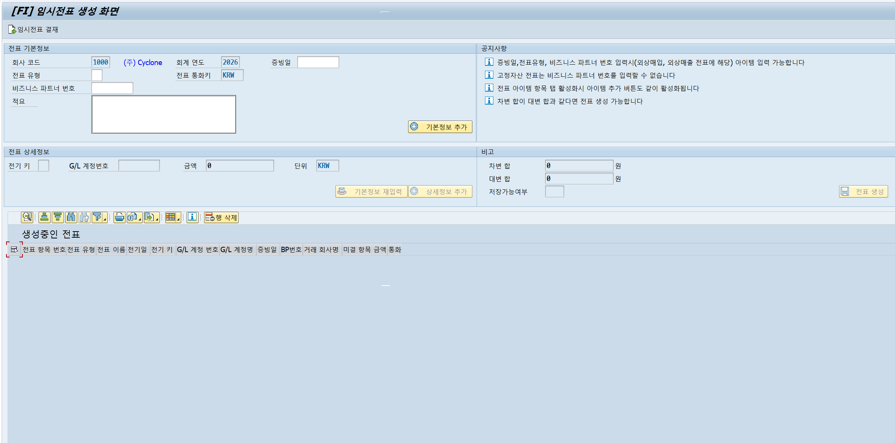
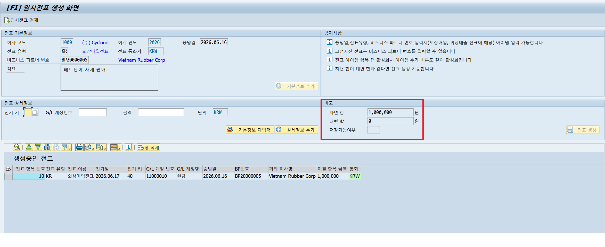
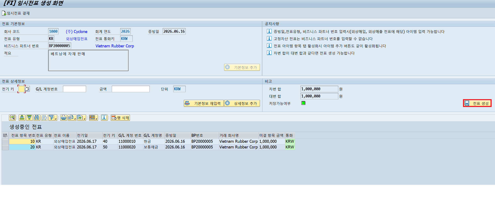
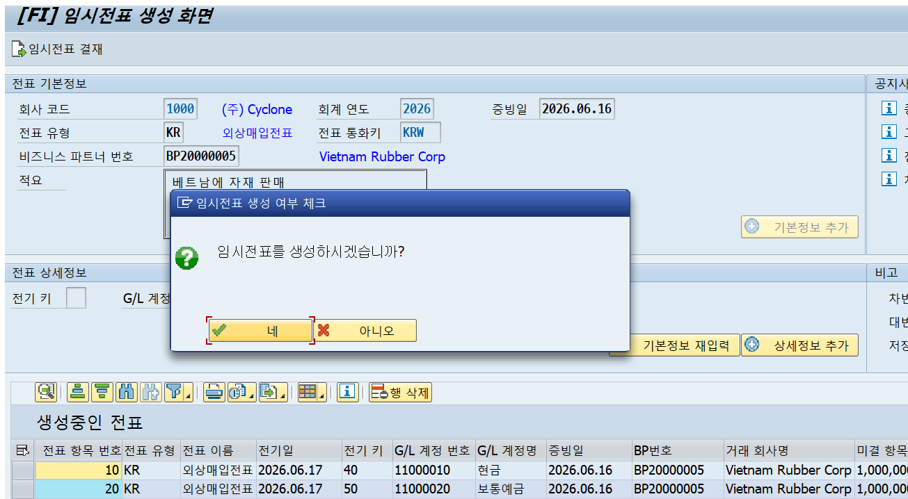
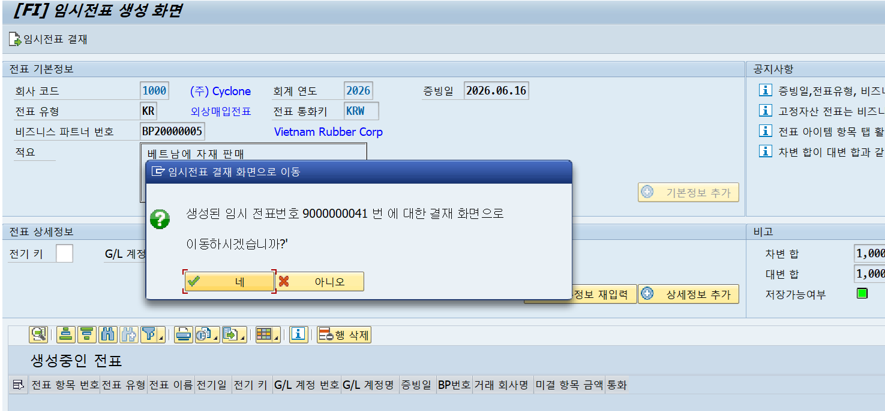

ABAP · OData · SAP Fiori 를 아우르는 FI 모듈 풀스택 개발자입니다.
SAP FI Developer · imsunbow@gmail.com · GitHub · LinkedIn · Blog
FI 모듈 담당자 관점에서 BC3·BC5 두 가지 과제에 집중했습니다.
BC3 — 출하 이후 매출·원가 반영이 지연되는 근본 원인은 SD 출하와 FI 전표 전기가 별도 시점에 처리되기 때문입니다. 이를 해결하기 위해 채번 후 헤더·아이템을 직접 INSERT하는 방식으로 출하 이벤트와 동시에 처리되도록 구현하여, 출하 완료 시점에 FI·CO 전표가 즉시 생성되고 총계정원장에 반영되도록 했습니다. 임시전표 결재 프로그램에서도 승인 시 FI·CO 전표를 동기적으로 생성함으로써 재무 데이터 단절 구간을 제거했습니다.
BC5 — 경영진이 외부 환경에서 채권 현황을 확인하기 어려운 문제는 SAP GUI 의존성에서 비롯됩니다. 독촉장 관리 Fiori 앱을 통해 미결 채권 KPI(미납 건수·금액·연체율)를 웹 브라우저에서 실시간으로 조회할 수 있도록 구현하고, 거래처별 독촉 메일 발송까지 앱 내에서 처리할 수 있게 하여 현장 의사결정 사이클을 단축했습니다.
전기 키(SA/DR/KR/AA) 유효성 검증, 차대변 잔액 자동 체크.
Number Range 채번 후 헤더·아이템 DB 저장 처리.





ALV Tree + 연도별 바 차트 + 자산클래스별 그룹 차트 3-panel.
자산 클릭 시 차트 즉시 갱신, 취득·매각 전표 자동 생성.
CDS View 기반 헤더·아이템 2-panel 전표 조회.
전표유형별 동적 컬럼, 역분개 전표 생성, 환율 환산.
Excel · PDF 다운로드 포함.
4-테이블 JOIN으로 전기 데이터 단일 조회.
KTOKS 5그룹 기준 ALV Tree로 차/대 집계 표시.
계정그룹별 바차트 · BS 월별 추이 차트 동적 렌더링.
미결 채권 KPI 대시보드와 독촉장 발행을 통합한 Fiori 앱.
OData 전량 조회 후 클라이언트 사이드 필터링.
거래처별 독촉 메일 발송(Gmail 연동) 포함.
엑셀 업로드로 입출금 내역을 읽어 전표를 일괄 반제.
FAE 3-쿼리로 통화불일치·초과입금 등 유효성 일괄 검증 후
채번·INSERT/MODIFY 일괄 처리.
AR/AP 전환에 따라 채권·채무 전표 조회.
입출금액 vs 미결금액 비교로 완전반제(C)/부분반제(P) 자동 결정.
AR 반제 시 청구문서 상태 동기화 포함.
DR 전표 GROUP BY로 거래처별 매출 집계 후 S/A/B/C 등급 산정.
월말 배치는 등급 재산정, 일배치는 미결잔액만 갱신.
고객마스터·여신 테이블 일괄 MODIFY.
임시전표를 결재·반려하는 후속 프로그램.
ALV 커스텀 툴바로 개별/일괄 결재 처리.
승인 시 채번 후 FI·CO 전표 동기 생성.
한국수출입은행 Open API로 당일 환율 JSON 수신.
100단위 통화(JPY 등) 처리 후 MODIFY로 DB 저장 (있으면 갱신, 없으면 삽입).
전표 유형(blart)별로 허용되는 전기 키(bschl)를 검증하고, G/L 계정과목 첫 자리로 계정 분류까지 체크
" 전표유형별 전기 키 유효성 검증 CASE gs_state_header-blart. WHEN 'SA'. IF gs_state_item-bschl NE '40' AND gs_state_item-bschl NE '50'. MESSAGE s000 WITH '일반전표(SA)는 전기 키 40, 50만 가능합니다.' DISPLAY LIKE 'E'. RETURN. ENDIF. WHEN 'DR'. IF gs_state_item-bschl NE '05' AND gs_state_item-bschl NE '40' AND gs_state_item-bschl NE '50'. MESSAGE s000 WITH '외상매출전표(DR)는 전기 키 05, 40, 50만 가능합니다.' DISPLAY LIKE 'E'. RETURN. ENDIF. WHEN 'KR'. IF gs_state_item-bschl NE '25' AND gs_state_item-bschl NE '31' AND gs_state_item-bschl NE '40' AND gs_state_item-bschl NE '50'. MESSAGE s000 WITH '외상매입전표(KR)는 전기 키 25, 31, 40, 50만 가능합니다.' DISPLAY LIKE 'E'. RETURN. ENDIF. WHEN 'AA'. IF gs_state_item-bschl NE '70' AND gs_state_item-bschl NE '75'. MESSAGE s000 WITH '고정자산전표(AA)는 전기 키 70, 75만 가능합니다.' DISPLAY LIKE 'E'. RETURN. ENDIF. ENDCASE. " 전기 키에 따른 G/L 계정 분류 검증 (계정번호 첫 자리로 판단) CASE gs_state_item-bschl. WHEN '05'. IF gs_state_item-hkont(1) NE '1'. MESSAGE s000 WITH '전기 키 05는 자산(매출채권) 계정만 가능합니다.' DISPLAY LIKE 'E'. RETURN. ENDIF. WHEN '25' OR '31'. IF gs_state_item-hkont(1) NE '2'. MESSAGE s000 WITH '전기 키 25/31은 부채 계정만 가능합니다.' DISPLAY LIKE 'E'. RETURN. ENDIF. WHEN '70' OR '75'. IF gs_state_item-hkont(2) NE '13'. MESSAGE s000 WITH '전기 키 70/75는 고정자산 계정만 가능합니다.' DISPLAY LIKE 'E'. RETURN. ENDIF. ENDCASE.
전기 키(bschl)로 차변/대변을 분리해 합계를 계산하고, 차액이 0인지 여부를 LED 아이콘으로 표시
LOOP AT gt_state_add INTO gs_state_add. lv_tabix = sy-tabix. " 전기 키에 대해 차대변 분리 및 계정 분류(koart) 할당 CASE gs_state_add-bschl. WHEN '40'. gv_debit_sum += gs_state_add-open_amt. gs_state_add-shkzg = 'S'. gs_state_add-koart = 'S'. WHEN '50'. gv_credit_sum += gs_state_add-open_amt. gs_state_add-shkzg = 'H'. gs_state_add-koart = 'S'. WHEN '05'. gv_debit_sum += gs_state_add-open_amt. gs_state_add-shkzg = 'S'. gs_state_add-koart = 'D'. WHEN '25'. gv_debit_sum += gs_state_add-open_amt. gs_state_add-shkzg = 'S'. gs_state_add-koart = 'K'. WHEN '31'. gv_credit_sum += gs_state_add-open_amt. gs_state_add-shkzg = 'H'. gs_state_add-koart = 'K'. WHEN '70'. gv_debit_sum += gs_state_add-open_amt. gs_state_add-shkzg = 'S'. gs_state_add-koart = 'A'. WHEN '75'. gv_credit_sum += gs_state_add-open_amt. gs_state_add-shkzg = 'H'. gs_state_add-koart = 'A'. ENDCASE. MODIFY gt_state_add FROM gs_state_add INDEX lv_tabix TRANSPORTING shkzg koart. ENDLOOP. " 차대 모두 0인 경우 아이콘 처리 건너뜀 CHECK gv_debit_sum NE 0 AND gv_credit_sum NE 0. gv_diff = abs( gv_debit_sum - gv_credit_sum ). " 차액 0이면 초록 LED, 아니면 빨간 LED → 전표생성 버튼 활성/비활성 연동 gs_state_add-icon = COND #( WHEN gv_diff EQ 0 THEN icon_led_green ELSE icon_led_red ).
헤더·아이템을 각각 INSERT하고 하나라도 실패하면 ROLLBACK, 모두 성공하면 COMMIT WAIT 처리
MOVE-CORRESPONDING gs_state_header TO ls_save_header. ls_save_header-belnr = gv_belnr. ls_save_header-status = 'D'. " 결재 대기 ls_save_header-hwaer = 'KRW'. ls_save_header-waers = 'KRW'. ls_save_header-clear_status = 'N'. " 미결 ls_save_header-header_txt = gv_header_text. ls_save_header-erdat = sy-datum. ls_save_header-erzet = sy-uzeit. ls_save_header-ernam = sy-uname. MOVE-CORRESPONDING gt_state_add TO lt_save_item. LOOP AT lt_save_item ASSIGNING FIELD-SYMBOL(<lfs_item>). <lfs_item>-belnr = gv_belnr. <lfs_item>-ktopl = 'CAKR'. <lfs_item>-erdat = sy-datum. <lfs_item>-erzet = sy-uzeit. <lfs_item>-ernam = sy-uname. IF <lfs_item>-waers EQ 'KRW'. <lfs_item>-wrbtr = <lfs_item>-open_amt. <lfs_item>-dmbtr = <lfs_item>-open_amt. ENDIF. ENDLOOP. " 헤더 INSERT → 실패 시 즉시 ROLLBACK INSERT zte1fi0005 FROM ls_save_header. IF sy-subrc NE 0. ROLLBACK WORK. MESSAGE s000 WITH '헤더 저장 실패.' DISPLAY LIKE 'E'. RETURN. ENDIF. " 아이템 INSERT → 실패 시 헤더까지 함께 ROLLBACK INSERT zte1fi0006 FROM TABLE lt_save_item. IF sy-subrc NE 0. ROLLBACK WORK. MESSAGE s000 WITH '아이템 저장 실패.' DISPLAY LIKE 'E'. RETURN. ENDIF. " 둘 다 성공했을 때만 COMMIT (WAIT: 완료 보장) COMMIT WORK AND WAIT. MESSAGE s000 WITH '헤더 및 아이템 항목들이 저장 완료되었습니다.'.
백엔드 OData에서 전체 데이터를 읽어 상태별 카운트를 JSON 모델에 반영
_calculateChartCounts: function (oModel) { var oChartModel = this.getView().getModel("chart"); // 리스트 필터에 무관하게 원본 데이터 직접 조회 oModel.read("/ApprovalHeaderSet", { success: function (oData) { var iWait = 0, iDone = 0, iReject = 0; oData.results.forEach(function (item) { if (item.Status === "D") { iWait++; } else if (item.Status === "P") { iDone++; } else if (item.Status === "J") { iReject++; } }); // 집계 결과 → JSON 모델 반영 → XML 차트 자동 갱신 oChartModel.setProperty("/WaitCount", iWait); oChartModel.setProperty("/DoneCount", iDone); oChartModel.setProperty("/RejectCount", iReject); }.bind(this), error: function () { sap.m.MessageToast.show("집계 데이터 로드 실패"); } }); },
독촉장 관리 앱의 KPI 대시보드용 JSON 모델 초기값 설정
onInit: function () { this.getView().setModel(new JSONModel({ kpi: { openCount: 0, // 미결 건수 overdueCount: 0, // 연체 건수 totalOpen: 0, // 총 미결 금액 totalOpenScale: "만", over90Count: 0, // 90일 초과 건수 avgOverdue: 0 // 평균 연체일 }, overdueRanges: [ { label: "1~30일", count: 0 }, { label: "31~60일", count: 0 }, { label: "61~90일", count: 0 }, { label: "90일 초과", count: 0 } ], clearStatus: [ { label: "미반제", count: 0 }, { label: "일부반제", count: 0 }, { label: "반제완료", count: 0 } ] }), "overview"); this._loadDunningStats([]); },
OData 서버 에러 회피를 위해 전체 데이터를 로드 후 클라이언트에서 필터링
onOverviewSearch: function () { var sPartner = this.byId("ovInputPartner").getValue().trim(); var sBukrs = this.byId("ovInputBukrs").getValue().trim(); var aFilters = []; if (sPartner) { aFilters.push(new Filter("PartnerNo", FilterOperator.EQ, sPartner)); } if (sBukrs) { aFilters.push(new Filter("Bukrs", FilterOperator.EQ, sBukrs)); } // 서버 필터 대신 클라이언트 필터로 집계 재계산 this._loadDunningStats(aFilters); }, onOverviewReset: function () { this.byId("ovInputPartner").setValue(""); this.byId("ovInputBukrs").setValue(""); this._loadDunningStats([]); },
hkont '13000030' 항목만 걸러 자산별로 COLLECT 집계 후 BINARY SEARCH로 매핑, 장부가액 산출
" 감가상각누계 계정(13000030) 항목만 자산별로 합산 LOOP AT gt_item INTO gs_item WHERE hkont EQ '13000030'. CLEAR ls_sum. ls_sum-bukrs = gs_item-bukrs. ls_sum-anln1 = gs_item-anln1. " 차대변 지표에 따라 누계액 가감 CASE gs_item-shkzg. WHEN 'H'. ls_sum-total += gs_item-dmbtr. " 대변: 상각 누적 WHEN 'S'. ls_sum-total -= gs_item-dmbtr. " 차변: 환입 ENDCASE. COLLECT ls_sum INTO lt_sum. " 동일 key면 total 누적 ENDLOOP. SORT lt_sum BY bukrs anln1. " BINARY SEARCH를 위한 사전 정렬 " 자산별 감가누계 및 장부가액 할당 LOOP AT gt_asset ASSIGNING FIELD-SYMBOL(<lfs_asset>). READ TABLE lt_sum INTO ls_sum WITH KEY bukrs = <lfs_asset>-bukrs anln1 = <lfs_asset>-anln1 BINARY SEARCH. IF sy-subrc EQ 0. <lfs_asset>-afaku = ls_sum-total. " 감가상각 누계액 ENDIF. " 장부가액 = 취득원가 - 감가상각 누계액 <lfs_asset>-bchwt = <lfs_asset>-kansw - <lfs_asset>-afaku. ENDLOOP.
헤더 1건 + 아이템 최대 3건(현금·감가누계·자산계정) INSERT 후 자산 마스터 loekz UPDATE, 실패 시 ROLLBACK
" 차변 - 현금 (장부가액만큼 매각대금 수취) PERFORM add_item USING lv_buzei '11000010' 'S' gs_asset-bchwt gs_asset-anln1 '40' lv_belnr CHANGING lt_item. " 차변 - 감가상각누계 (누계액 있을 때만 추가) IF gs_asset-afaku GT 0. lv_buzei += 10. PERFORM add_item USING lv_buzei '13000030' 'S' gs_asset-afaku gs_asset-anln1 '40' lv_belnr CHANGING lt_item. ENDIF. " 대변 - 자산계정 (취득원가 전액 제거) lv_buzei += 10. PERFORM add_item USING lv_buzei lv_hkont 'H' gs_asset-kansw gs_asset-anln1 '50' lv_belnr CHANGING lt_item. " 전표 헤더 INSERT INSERT zte1fi0005 FROM ls_header. IF sy-subrc NE 0. ROLLBACK WORK. MESSAGE s000 WITH '매각 전표 헤더 생성 실패' DISPLAY LIKE 'E'. RETURN. ENDIF. " 전표 아이템 INSERT INSERT zte1fi0006 FROM TABLE lt_item. IF sy-subrc NE 0. ROLLBACK WORK. MESSAGE s000 WITH '감가상각 전표 아이템 생성 실패' DISPLAY LIKE 'E'. RETURN. ENDIF. " 자산 마스터 논리 삭제 (loekz 플래그 세팅) UPDATE zte1fi0004 SET loekz = abap_true aedat = sy-datum aenam = sy-uname WHERE bukrs EQ gs_asset-bukrs AND anln1 EQ gs_asset-anln1. IF sy-subrc NE 0. ROLLBACK WORK. MESSAGE s000 WITH '고정자산 매각 실패' DISPLAY LIKE 'E'. RETURN. ENDIF. COMMIT WORK AND WAIT. MESSAGE s000 WITH |{ gs_asset-anln1 }번 고정자산 매각 성공 및 전표 { lv_belnr }번 생성 완료.|.
자산 데이터를 연도 → 자산클래스 → 개별 자산 3단계 계층으로 트리 노드에 삽입
SORT gt_asset BY aktiv(4) anlkl anln1. CLEAR: lv_year, lv_anlkl, lv_parent, lv_child. LOOP AT gt_asset ASSIGNING FIELD-SYMBOL(<lfs_asset>). " ① 연도 노드 — 연도 바뀔 때마다 새 폴더 생성 IF <lfs_asset>-aktiv(4) NE lv_year. lv_year = <lfs_asset>-aktiv(4). CLEAR: lv_anlkl, lv_child. ls_node-isfolder = abap_true. ls_node-expander = abap_true. CALL METHOD gcl_tree->add_node EXPORTING i_relat_node_key = space i_relationship = cl_gui_column_tree=>relat_last_child i_node_text = lv_year is_node_layout = ls_node IMPORTING e_new_node_key = lv_parent. CALL METHOD gcl_tree->expand_node( i_node_key = lv_parent ). ENDIF. " ② 자산클래스 노드 — 클래스 바뀔 때마다 연도 노드 아래에 추가 IF <lfs_asset>-anlkl NE lv_anlkl OR lv_child IS INITIAL. lv_anlkl = <lfs_asset>-anlkl. ls_node-isfolder = abap_true. ls_node-expander = abap_true. PERFORM set_asset_text USING <lfs_asset>-anlkl CHANGING lv_text. CALL METHOD gcl_tree->add_node EXPORTING i_relat_node_key = lv_parent i_relationship = cl_gui_column_tree=>relat_last_child i_node_text = lv_text is_node_layout = ls_node IMPORTING e_new_node_key = lv_child. CALL METHOD gcl_tree->expand_node( i_node_key = lv_child ). ENDIF. " ③ 자산 리프 노드 — 자산클래스 노드 아래에 개별 자산 할당 IF lv_child IS NOT INITIAL. ls_node-isfolder = abap_false. ls_node-expander = abap_false. lv_text = <lfs_asset>-asset_name. ls_tree-anln1 = <lfs_asset>-anln1. ls_tree-kansw = <lfs_asset>-kansw. ls_tree-waers = <lfs_asset>-waers. ls_tree-aktiv = <lfs_asset>-aktiv. ls_tree-kostl = <lfs_asset>-kostl. ls_tree-ktext = <lfs_asset>-ktext. CALL METHOD gcl_tree->add_node EXPORTING i_relat_node_key = lv_child i_relationship = cl_gui_column_tree=>relat_last_child i_node_text = lv_text is_node_layout = ls_node is_outtab_line = ls_tree. ENDIF. ENDLOOP. CALL METHOD gcl_tree->frontend_update( ).
한국수출입은행 Open API를 cl_http_client로 호출, 당일 기준 환율 JSON 수신
" 오늘 날짜 기준 URL 동적 생성 gv_url = |https://oapi.koreaexim.go.kr/site/program/financial/exchangeJSON?| && |authkey={ gc_authkey }&searchdate={ sy-datum }&data=AP01|. " HTTP 클라이언트 인스턴스 생성 CALL METHOD cl_http_client=>create_by_url EXPORTING url = gv_url IMPORTING client = go_http_client. " GET 요청 → 송신 → 수신 go_http_client->request->set_method( if_http_request=>co_request_method_get ). go_http_client->send( ). go_http_client->receive( ). " 응답 본문을 문자열로 추출 gv_json_data = go_http_client->response->get_cdata( ).
수신된 JSON 문자열을 /ui2/cl_json으로 내부 테이블에 직접 매핑, 빈 응답(영업일 외) 별도 처리
" 빈 응답 또는 빈 배열([]) → 영업일 외 등 데이터 없는 경우 IF gv_json_data IS INITIAL OR gv_json_data = '[]'. MESSAGE '수신된 환율 데이터가 없습니다. (영업일 확인 필요)' TYPE 'S' DISPLAY LIKE 'W'. RETURN. ENDIF. " JSON 문자열 → ABAP 내부 테이블 역직렬화 /ui2/cl_json=>deserialize( EXPORTING json = gv_json_data CHANGING data = gt_json ).
100단위 통화 처리, 콤마 제거 후 MODIFY로 저장 — 기존 레코드 갱신, 신규면 삽입
" 역전 날짜: SAP 환율 테이블은 99999999 - 기준일로 정렬 gv_gdatu_inv = 99999999 - sy-datum. LOOP AT gt_json INTO gs_json. " 숫자 문자열에서 콤마 제거 (예: "1,320.50" → "1320.50") REPLACE ALL OCCURRENCES OF ',' IN gs_json-deal_bas_r WITH ''. CONDENSE gs_json-deal_bas_r NO-GAPS. gs_cm0005-kurst = gc_kurst. gs_cm0005-tcurr = gc_tcurr. gs_cm0005-gdatu = gv_gdatu_inv. " 100단위 통화 처리 (예: "JPY(100)" → "JPY"만 추출) IF gs_json-cur_unit CS '(100)'. gs_cm0005-fcurr = gs_json-cur_unit+0(3). ELSE. gs_cm0005-fcurr = gs_json-cur_unit. ENDIF. gs_cm0005-ukurs = gs_json-deal_bas_r. gs_cm0005-erdat = sy-datum. gs_cm0005-erzet = sy-uzeit. gs_cm0005-ernam = sy-uname. APPEND gs_cm0005 TO gt_cm0005. CLEAR gs_cm0005. ENDLOOP. " MODIFY = INSERT + UPDATE 겸용 (key 있으면 update, 없으면 insert) MODIFY zte1cm0005 FROM TABLE gt_cm0005. IF sy-dbcnt GT 0. COMMIT WORK. MESSAGE |환율 데이터 { lines( gt_cm0005 ) }건 저장 완료!| TYPE 'S'. ENDIF.
원전표 아이템 금액에 × -1 적용해 역분개 전표 생성, INSERT×2 + UPDATE×2 모두 성공 시 COMMIT
" 역분개 아이템: 원전표 아이템의 금액을 반전(-1)시켜 생성 LOOP AT gt_item INTO DATA(ls_item). ls_rev_doc_item-bukrs = gs_header-bukrs. ls_rev_doc_item-gjahr = gs_header-gjahr. ls_rev_doc_item-belnr = lv_belnr. ls_rev_doc_item-buzei = sy-tabix * 10. ls_rev_doc_item-bschl = ls_item-bschl. ls_rev_doc_item-shkzg = ls_item-shkzg. ls_rev_doc_item-hkont = ls_item-hkont. ls_rev_doc_item-koart = ls_item-koart. ls_rev_doc_item-waers = ls_item-waers. ls_rev_doc_item-wrbtr = ls_item-wrbtr * -1. " 외화 금액 반전 ls_rev_doc_item-open_amt = ls_item-open_amt * -1. ls_rev_doc_item-dmbtr = ls_item-dmbtr * -1. " 원화 환산 금액 반전 ls_rev_doc_item-ukurs = ls_item-ukurs. ls_rev_doc_item-erdat = sy-datum. ls_rev_doc_item-ernam = sy-uname. APPEND ls_rev_doc_item TO lt_rev_doc_item. ENDLOOP. " 역분개 전표 헤더 INSERT INSERT zte1fi0005 FROM ls_rev_doc_header. IF sy-subrc NE 0. ROLLBACK WORK. MESSAGE s000 WITH '헤더 저장 실패.' DISPLAY LIKE 'E'. RETURN. ENDIF. " 역분개 전표 아이템 INSERT INSERT zte1fi0006 FROM TABLE lt_rev_doc_item. IF sy-subrc NE 0. ROLLBACK WORK. MESSAGE s000 WITH '아이템 저장 실패.' DISPLAY LIKE 'E'. RETURN. ENDIF. " 원전표 헤더 UPDATE: 역분개 완료 상태 + 역분개 전표번호 연결 UPDATE zte1fi0005 SET status = 'X' stblg = lv_belnr aedat = sy-datum aenam = sy-uname WHERE bukrs EQ gs_header-bukrs AND belnr EQ gs_header-belnr AND gjahr EQ gs_header-gjahr. IF sy-subrc NE 0. ROLLBACK WORK. MESSAGE s000 WITH '원전표 헤더 업데이트 실패.' DISPLAY LIKE 'E'. RETURN. ENDIF. " 원전표 아이템 UPDATE: 타임스탬프만 갱신 UPDATE zte1fi0006 SET aedat = sy-datum aenam = sy-uname WHERE bukrs EQ gs_header-bukrs AND belnr EQ gs_header-belnr. IF sy-subrc NE 0. ROLLBACK WORK. MESSAGE s000 WITH '원전표 아이템 업데이트 실패.' DISPLAY LIKE 'E'. RETURN. ENDIF. COMMIT WORK AND WAIT. MESSAGE s000 WITH |역분개 전표 생성 완료. 전표 번호 : { lv_belnr }|.
pa_blart 값에 따라 FCAT에 추가할 컬럼을 다르게 결정 — 역분개·BP·원전표 컬럼이 전표 유형마다 다르게 조합됨
" 전표 유형에 따른 동적 컬럼 할당 CASE pa_blart. WHEN 'SA'. " 일반전표: 역분개 전표번호 + 사유 PERFORM set_fcat_header USING: ' ' 'STBLG' '역분개 전표 번호' 'ZTE1FI0005' '' '12', ' ' 'REASON_TXT2' '역분개 사유' 'ZTE1FI0005' '' '12'. WHEN 'SR'. " 역분개전표: 원전표번호 + 원전표의 역분개 사유 PERFORM set_fcat_header USING: ' ' 'REF_BELNR' '원전표 번호' 'ZTE1FI0005' '' '12', ' ' 'REASON_TXT' '역분개 사유' 'ZTE1FI0005' '' '12'. WHEN 'DR' OR 'KR'. " 매출/매입전표: BP 정보 + 역분개 정보 PERFORM set_fcat_header USING: ' ' 'PARTNER_NO' '협력사 번호' 'ZTE1CM0004' '' '12', ' ' 'COMP_NAME' '협력사명' 'ZTE1CM0004' '' '18', ' ' 'STBLG' '' 'ZTE1FI0005' '' '12', ' ' 'REASON_TXT2' '역분개 사유' 'ZTE1FI0005' '' '12'. WHEN 'AL'. " 전체 조회: 모든 컬럼 포함 PERFORM set_fcat_header USING: ' ' 'PARTNER_NO' '협력사 번호' 'ZTE1CM0004' '' '12', ' ' 'COMP_NAME' '' 'ZTE1CM0004' '' '18', ' ' 'REF_BELNR' '원전표 번호' 'ZTE1FI0005' '' '12', ' ' 'STBLG' '역분개 전표 번호' 'ZTE1FI0005' '' '12', ' ' 'REASON_TXT' '역분개 사유' 'ZTE1FI0005' '' '12'. ENDCASE.
IDOC 형식 환율을 SAP 금액으로 변환하고, shkzg 기준으로 차변/대변 금액을 분리해 원화 환산까지 산출
LOOP AT gt_item ASSIGNING FIELD-SYMBOL(<lfs_item>). " IDOC 형식 환율 → SAP 금액 타입으로 변환 CALL FUNCTION 'CURRENCY_AMOUNT_IDOC_TO_SAP' EXPORTING currency = 'KRW' idoc_amount = <lfs_item>-ukurs IMPORTING sap_amount = lv_dmbtr. " KRW는 환율이 0으로 저장되므로 강제로 1 할당 IF lv_dmbtr EQ 0 AND <lfs_item>-waers = 'KRW'. lv_dmbtr = 1. ENDIF. " shkzg 기준 차대변 분리 + 원화 환산 금액 계산 CASE <lfs_item>-shkzg. WHEN 'S'. " 차변 <lfs_item>-debit_amt = <lfs_item>-wrbtr. <lfs_item>-debit_waers = <lfs_item>-waers. <lfs_item>-debit_dmbtr = <lfs_item>-wrbtr * lv_dmbtr. " 원화 환산 <lfs_item>-debit_hwaer = 'KRW'. CLEAR <lfs_item>-credit_waers. " 대변 통화 비우기 <lfs_item>-shkzg_text = '차변'. WHEN 'H'. " 대변 <lfs_item>-credit_amt = <lfs_item>-wrbtr. <lfs_item>-credit_waers = <lfs_item>-waers. <lfs_item>-credit_dmbtr = <lfs_item>-wrbtr * lv_dmbtr. " 원화 환산 <lfs_item>-credit_hwaer = 'KRW'. CLEAR <lfs_item>-debit_waers. " 차변 통화 비우기 <lfs_item>-shkzg_text = '대변'. ENDCASE. ENDLOOP.
계정 성격(KTOKS) + 차대변(SHKZG) 조합으로 잔액 부호를 결정하고, 계정별 당기/전년 금액을 누적 집계
" 계정 성격(KTOKS) + 차대변(SHKZG) 기준 잔액 부호 결정 CASE gs_balance-ktoks. WHEN 'ASST' OR 'EXPN'. " 자산·비용 : 차변 증가 IF gs_balance-shkzg = 'S'. lv_sign_amt = lv_base_amt. ELSE. lv_sign_amt = lv_base_amt * -1. ENDIF. WHEN 'LIAB' OR 'EQTY' OR 'REVE'. " 부채·자본·수익 : 대변 증가 IF gs_balance-shkzg = 'H'. lv_sign_amt = lv_base_amt. ELSE. lv_sign_amt = lv_base_amt * -1. ENDIF. WHEN OTHERS. CONTINUE. " BS 대상 아닌 계정 제외 ENDCASE. " 계정 라인 조회 → 신규면 생성, 기존이면 금액 누적 READ TABLE gt_bs_tree INTO ls_tree WITH KEY node_type = 'ACCOUNT' saknr = gs_balance-saknr. IF sy-subrc <> 0. " 신규 계정 ls_tree-node_type = 'ACCOUNT'. ls_tree-ktoks = gs_balance-ktoks. ls_tree-saknr = gs_balance-saknr. ls_tree-txt20 = gs_balance-txt20. ls_tree-waers = gs_balance-waers. IF gs_balance-gjahr = pa_gjahr. ls_tree-curr_amt = lv_sign_amt. ELSE. ls_tree-prev_amt = lv_sign_amt. " 전년도 ENDIF. APPEND ls_tree TO gt_bs_tree. ELSE. " 기존 계정 누적 IF gs_balance-gjahr = pa_gjahr. ls_tree-curr_amt = ls_tree-curr_amt + lv_sign_amt. ELSE. ls_tree-prev_amt = ls_tree-prev_amt + lv_sign_amt. ENDIF. MODIFY gt_bs_tree FROM ls_tree TRANSPORTING curr_amt prev_amt WHERE node_type = 'ACCOUNT' AND saknr = gs_balance-saknr. ENDIF.
ROOT(재무상태표) → GROUP(자산/부채/자본) → ACCOUNT(계정) 3단계로 노드 생성, 그룹 합계는 ACCOUNT 집계에서 역산
" 그룹(자산/부채/자본)별 합계 계산 LOOP AT lt_acct INTO ls_acct. CASE ls_acct-ktoks. WHEN 'ASST'. ls_asst-curr_amt += ls_acct-curr_amt. ls_asst-prev_amt += ls_acct-prev_amt. ls_asst-diff_amt += ls_acct-diff_amt. WHEN 'LIAB'. ls_liab-curr_amt += ls_acct-curr_amt. ls_liab-prev_amt += ls_acct-prev_amt. ls_liab-diff_amt += ls_acct-diff_amt. WHEN 'EQTY'. ls_eqty-curr_amt += ls_acct-curr_amt. ls_eqty-prev_amt += ls_acct-prev_amt. ls_eqty-diff_amt += ls_acct-diff_amt. ENDCASE. ENDLOOP. " ROOT 총계 = 자산 + 부채 + 자본 ls_root-curr_amt = ls_asst-curr_amt + ls_liab-curr_amt + ls_eqty-curr_amt. ls_root-diff_amt = ls_asst-diff_amt + ls_liab-diff_amt + ls_eqty-diff_amt. " ROOT / GROUP 노드 생성 (굵게 강조) PERFORM add_tree_node USING ls_root '재무상태표' '' lv_root_key 'X'. PERFORM add_tree_node USING ls_asst '자산' lv_root_key lv_asst_key 'X'. PERFORM add_tree_node USING ls_liab '부채' lv_root_key lv_liab_key 'X'. PERFORM add_tree_node USING ls_eqty '자본' lv_root_key lv_eqty_key 'X'. " ACCOUNT 노드 생성 — 각 그룹 하위에 계정 배치 SORT lt_acct BY ktoks saknr. LOOP AT lt_acct INTO ls_acct. CASE ls_acct-ktoks. WHEN 'ASST'. PERFORM add_tree_node USING ls_acct ls_acct-txt20 lv_asst_key lv_node_key space. WHEN 'LIAB'. PERFORM add_tree_node USING ls_acct ls_acct-txt20 lv_liab_key lv_node_key space. WHEN 'EQTY'. PERFORM add_tree_node USING ls_acct ls_acct-txt20 lv_eqty_key lv_node_key space. ENDCASE. ENDLOOP. " 노드 펼침 — 하위 계정이 있는 그룹만 expand CALL METHOD gcl_tree->expand_node( i_node_key = lv_root_key ). IF lv_asst_cnt > 0. CALL METHOD gcl_tree->expand_node( i_node_key = lv_asst_key ). ENDIF. IF lv_liab_cnt > 0. CALL METHOD gcl_tree->expand_node( i_node_key = lv_liab_key ). ENDIF. IF lv_eqty_cnt > 0. CALL METHOD gcl_tree->expand_node( i_node_key = lv_eqty_key ). ENDIF. CALL METHOD gcl_tree->frontend_update.
외부 라이브러리 없이 순수 SVG로 당기/전년 꺾은선 차트 생성 — Y축 금액 라벨, 격자선, 전년 데이터 유무 조건 분기 포함
" 월별 SVG 좌표 계산 (X: 등간격, Y: 최대값 대비 비율) LOOP AT gt_chart ASSIGNING <fs_chart>. lv_idx = lv_idx + 1. lv_x = 95 + ( lv_idx - 1 ) * 50. lv_curr_y = 250 - ( lv_curr_abs * 190 / lv_max_amt ). " 위쪽이 Y=0 lv_prev_y = 250 - ( lv_prev_abs * 190 / lv_max_amt ). " Polyline points 누적 (당기 / 전년) CONCATENATE lv_curr_points lv_x_txt ',' lv_curr_y_txt INTO lv_curr_points SEPARATED BY space. CONCATENATE lv_prev_points lv_x_txt ',' lv_prev_y_txt INTO lv_prev_points SEPARATED BY space. " 당기 데이터 포인트 원(circle) SVG 누적 CONCATENATE lv_curr_circle '<circle cx="' lv_x_txt '" cy="' lv_curr_y_txt '" r="5" fill="#2563eb" stroke="white" stroke-width="2"/>' INTO lv_curr_circle. ENDLOOP. " 전년 데이터 유무에 따라 선/범례 조건 분기 IF gv_has_prev_data = abap_true. lv_chart_sub = '당기 / 전년 금액 비교'. lv_prev_legend = '<span class="dot2"></span>전년'. CONCATENATE '<polyline fill="none" stroke="#f97316" stroke-width="4" points="' lv_prev_points '"/' INTO lv_prev_line. ELSE. lv_chart_sub = '당기 금액 기준 · 전년 데이터 없음'. CLEAR: lv_prev_line, lv_prev_circle, lv_prev_legend. ENDIF. " 최종 HTML 조합 후 W3HTMLTAB(255자 단위)로 분할 → gcl_chart_html->load_data WHILE lv_html IS NOT INITIAL. IF strlen( lv_html ) > 255. ls_html-line = lv_html+0(255). SHIFT lv_html BY 255 PLACES LEFT. ELSE. ls_html-line = lv_html. CLEAR lv_html. ENDIF. APPEND ls_html TO lt_html. ENDWHILE. CALL METHOD gcl_chart_html->load_data EXPORTING type = 'text' subtype = 'html' IMPORTING assigned_url = lv_url CHANGING data_table = lt_html. CALL METHOD gcl_chart_html->show_url( EXPORTING url = lv_url ).
ALSM_EXCEL_TO_INTERNAL_TABLE로 엑셀 파싱 후 col 번호 기준 ASSIGN COMPONENT로 동적 필드 매핑 — 전표번호 ALPHA 패딩, 금액 콤마 제거, FIELD-SYMBOL 활용
" 엑셀 파일 → alsmex_tabline 내부 테이블 변환 (1048576행) CALL FUNCTION 'ALSM_EXCEL_TO_INTERNAL_TABLE' EXPORTING filename = pa_fname i_begin_col = 1 i_begin_row = 2 i_end_col = 5 i_end_row = 1048576 TABLES intern = lt_excel. LOOP AT lt_excel INTO ls_excel. AT NEW row. APPEND INITIAL LINE TO gt_bank ASSIGNING <lfs_line>. ENDAT. " col 번호 → 구조체 컴포넌트 동적 매핑 CASE ls_excel-col. WHEN 1. ASSIGN COMPONENT 'PARTNER_NO' OF STRUCTURE <lfs_line> TO <lv_field>. WHEN 2. " 전표번호 ALPHA 패딩 (앞자리 0 채우기) lv_belnr = CONV zte1fi0005-belnr( ls_excel-value ). CALL FUNCTION 'CONVERSION_EXIT_ALPHA_INPUT' EXPORTING input = lv_belnr IMPORTING output = lv_belnr. ls_excel-value = lv_belnr. ASSIGN COMPONENT 'REF_BELNR' OF STRUCTURE <lfs_line> TO <lv_field>. WHEN 3. ASSIGN COMPONENT 'BUDAT' OF STRUCTURE <lfs_line> TO <lv_field>. WHEN 4. " 금액 콤마 제거 후 매핑 REPLACE ALL OCCURRENCES OF ',' IN ls_excel-value WITH ''. ASSIGN COMPONENT 'WRBTR' OF STRUCTURE <lfs_line> TO <lv_field>. WHEN 5. ASSIGN COMPONENT 'WAERS' OF STRUCTURE <lfs_line> TO <lv_field>. ENDCASE. IF <lv_field> IS ASSIGNED. <lv_field> = ls_excel-value. UNASSIGN <lv_field>. ENDIF. ENDLOOP.
전표·BP·전표유형을 FAE 3-쿼리로 일괄 조회 후 통화불일치/없는전표/BP조합불일치/초과입금 순차 검증 — 동일 전표 여러 행 처리 시 lt_accum으로 누적 입금액 추적
" FAE 3-쿼리: 전표+BP 조합 / 전표번호만 / BP번호만 SELECT a~bukrs a~gjahr a~belnr a~blart a~partner_no a~waers AS open_waers a~clear_status b~open_amt c~ltext d~comp_name d~waers AS bp_waers d~bp_type INTO CORRESPONDING FIELDS OF TABLE lt_fi FROM zte1fi0005 AS a INNER JOIN zte1fi0006 AS b ON b~bukrs EQ a~bukrs AND b~gjahr EQ a~gjahr AND b~belnr EQ a~belnr INNER JOIN zte1fi0002 AS c ON a~blart EQ c~blart LEFT OUTER JOIN zte1cm0004 AS d ON a~partner_no EQ d~partner_no FOR ALL ENTRIES IN gt_bank WHERE a~belnr EQ gt_bank-ref_belnr AND a~partner_no EQ gt_bank-partner_no AND a~loekz EQ space. LOOP AT gt_bank ASSIGNING FIELD-SYMBOL(<lfs_bank>). " IDOC 금액 → SAP 내부 포맷 변환 CALL FUNCTION 'CURRENCY_AMOUNT_IDOC_TO_SAP' EXPORTING currency = <lfs_bank>-wrbtr_waers idoc_amount = <lfs_bank>-wrbtr IMPORTING sap_amount = <lfs_bank>-wrbtr. " 전표+BP 조합 매핑 READ TABLE lt_fi INTO ls_fi WITH KEY belnr = <lfs_bank>-ref_belnr partner_no = <lfs_bank>-partner_no. IF sy-subrc NE 0. " 조합 실패 → 전표/BP 각각 개별 체크 후 remark 누적 <lfs_bank>-icon = icon_led_red. <lfs_bank>-remark = '전표-BP 조합 불일치'. CONTINUE. ENDIF. " 이전 행에서 이미 차감된 누적 입금액 반영 (동일 전표 멀티행) READ TABLE lt_accum INTO ls_accum WITH KEY ref_belnr = <lfs_bank>-ref_belnr partner_no = <lfs_bank>-partner_no. IF sy-subrc EQ 0. <lfs_bank>-open_amt = <lfs_bank>-open_amt - ls_accum-sum_wrbtr. ENDIF. " 초과입금 체크 IF <lfs_bank>-wrbtr GT <lfs_bank>-open_amt. <lfs_bank>-icon = icon_led_red. <lfs_bank>-remark = '입금액이 미결금액 초과'. CONTINUE. ENDIF. " 반제 상태별 아이콘/비고 결정 CASE <lfs_bank>-clear_status. WHEN 'N' OR 'P'. <lfs_bank>-icon = COND #( WHEN <lfs_bank>-wrbtr EQ <lfs_bank>-open_amt THEN icon_led_green ELSE icon_led_yellow ). <lfs_bank>-remark = COND #( WHEN <lfs_bank>-wrbtr EQ <lfs_bank>-open_amt THEN '완전반제 가능' ELSE '부분반제 가능' ). WHEN 'C'. <lfs_bank>-icon = icon_led_red. <lfs_bank>-remark = '이미 반제된 전표'. CONTINUE. ENDCASE. " 누적 입금액 갱신 READ TABLE lt_accum ASSIGNING FIELD-SYMBOL(<lfs_accum>) WITH KEY ref_belnr = <lfs_bank>-ref_belnr partner_no = <lfs_bank>-partner_no. IF sy-subrc EQ 0. <lfs_accum>-sum_wrbtr += <lfs_bank>-wrbtr. ELSE. APPEND VALUE #( ref_belnr = <lfs_bank>-ref_belnr partner_no = <lfs_bank>-partner_no sum_wrbtr = <lfs_bank>-wrbtr ) TO lt_accum. ENDIF. ENDLOOP.
유효 행(초록/노랑)만 수집 → FAE 3-쿼리(헤더·아이템·출하테이블) → 전표별 채번 → 반제전표 헤더+아이템 INSERT, 원전표 UPDATE, 출하테이블 UPDATE, 입출금내역 INSERT → COMMIT AND WAIT
" 유효 행(초록/노랑)만 대상 수집 → 중복 제거 LOOP AT gt_bank ASSIGNING <lfs_bank> WHERE icon EQ icon_led_green OR icon EQ icon_led_yellow. APPEND VALUE #( bukrs = <lfs_bank>-bukrs gjahr = <lfs_bank>-gjahr ref_belnr = <lfs_bank>-ref_belnr ) TO lt_target. ENDLOOP. SORT lt_target BY bukrs gjahr ref_belnr. DELETE ADJACENT DUPLICATES FROM lt_target COMPARING bukrs gjahr ref_belnr. " FAE 일괄 조회: 원전표 헤더 / 아이템 / 출하테이블 SELECT bukrs gjahr belnr blart bldat budat partner_no waers clear_status ref_belnr INTO CORRESPONDING FIELDS OF TABLE lt_head_org FROM zte1fi0005 FOR ALL ENTRIES IN lt_target WHERE bukrs EQ lt_target-bukrs AND gjahr EQ lt_target-gjahr AND belnr EQ lt_target-ref_belnr AND loekz EQ space. SELECT bukrs gjahr belnr buzei hkont partner_no wrbtr open_amt close_amt waers augdt augbl koart shkzg bschl INTO CORRESPONDING FIELDS OF TABLE lt_all_item FROM zte1fi0006 FOR ALL ENTRIES IN lt_target WHERE bukrs EQ lt_target-bukrs AND gjahr EQ lt_target-gjahr AND belnr EQ lt_target-ref_belnr AND loekz EQ space. " 행별 채번 → 반제 후 미결금액/상태 계산 → INSERT/UPDATE 적재 LOOP AT gt_bank ASSIGNING <lfs_bank> WHERE icon EQ icon_led_green OR icon EQ icon_led_yellow. CALL FUNCTION 'NUMBER_GET_NEXT' EXPORTING nr_range_nr = '01' object = 'ZNRE1FI01' IMPORTING number = lv_aug_belnr. lv_new_open = <lfs_bank>-open_amt - <lfs_bank>-wrbtr. lv_status = COND #( WHEN lv_new_open EQ 0 THEN 'C' ELSE 'P' ). " 반제전표 헤더·입출금내역·원전표 헤더 적재 ls_head_ins-belnr = lv_aug_belnr. ls_head_ins-blart = 'ZR'. ls_head_ins-clear_status = 'C'. ls_head_ins-status = 'P'. APPEND ls_head_ins TO lt_head_ins. ls_head_upd-clear_status = lv_status. ls_head_upd-augbl = lv_aug_belnr. APPEND ls_head_upd TO lt_head_upd. ENDLOOP. " DB 반영: INSERT(반제헤더+아이템+입출금) → MODIFY(원전표헤더+아이템+출하) → COMMIT INSERT zte1fi0005 FROM TABLE lt_head_ins.. IF sy-subrc NE 0. ROLLBACK WORK. RETURN. ENDIF. INSERT zte1fi0006 FROM TABLE lt_item_ins.. IF sy-subrc NE 0. ROLLBACK WORK. RETURN. ENDIF. INSERT zte1fi0009 FROM TABLE lt_save.. IF sy-subrc NE 0. ROLLBACK WORK. RETURN. ENDIF. MODIFY zte1fi0005 FROM TABLE lt_head_upd.. IF sy-dbcnt EQ 0. ROLLBACK WORK. RETURN. ENDIF. MODIFY zte1fi0006 FROM TABLE lt_item_upd.. IF sy-dbcnt EQ 0. ROLLBACK WORK. RETURN. ENDIF. MODIFY zte1sd0012 FROM TABLE lt_head_ship.. IF sy-dbcnt EQ 0. ROLLBACK WORK. RETURN. ENDIF. COMMIT WORK AND WAIT.
매출채권(AR·DR)/매입채무(AP·KR) 라디오버튼에 따라 거래처 참조 테이블을 동적으로 분기 — 동일 컬럼(PARTNER_NO/COMP_NAME)이지만 ref_table이 SD·MM 테이블로 달라짐
" 고정 헤더 FCAT 등록 (상태 아이콘·전표번호·일자·전표유형 공통) PERFORM set_fcat_top USING: 'X' 'ICON' '상태' '' '' 4, 'X' 'BELNR' '' 'ZTE1FI0005' '' 15, ' ' 'BLDAT' '' 'ZTE1FI0005' '' 15, ' ' 'BUDAT' '' 'ZTE1FI0005' '' 15, ' ' 'BLART' '' 'ZTE1FI0002' '' 10, ' ' 'LTEXT' '' 'ZTE1FI0002' '' 10. " AR/AP 라디오버튼에 따라 거래처 ref_table 동적 분기 CASE abap_true. WHEN pa_ar. " 매출채권 — 고객 마스터(SD) PERFORM set_fcat_top USING: ' ' 'PARTNER_NO' '' 'ZTE1SD0001' '' 15, ' ' 'COMP_NAME' '' 'ZTE1CM0004' '' 18. WHEN pa_ap. " 매입채무 — 공급업체 마스터(MM) PERFORM set_fcat_top USING: ' ' 'PARTNER_NO' '' 'ZTE1MM0010' 'LIFNR' 15, ' ' 'COMP_NAME' '' 'ZTE1CM0004' '' 18. ENDCASE. " 하단 아이템 FCAT — 차대변 통화키 자동 연결 (cfieldname) PERFORM set_fcat_item USING: 'X' 'BUZEI' '라인번호' 'ZTE1FI0006' '' 6, ' ' 'DEBIT_AMT' '차변 미결금액' 'ZTE1FI0006' 'OPEN_AMT' 10, ' ' 'DEBIT_WAERS' '통화' 'ZTE1FI0006' '' 10, ' ' 'CREDIT_AMT' '대변 미결금액' 'ZTE1FI0006' 'OPEN_AMT' 10, ' ' 'CREDIT_WAERS' '통화' 'ZTE1FI0006' '' 10. " 입출금 내역 FCAT — 원전표금액 합산용 cfieldname 연결 PERFORM set_fcat_clearing USING: 'X' 'REF_BELNR' '기존 전표 번호' 'ZTE1FI0009' '' 10, ' ' 'WRBTR' '입출금금액' 'ZTE1FI0009' '' 10, ' ' 'OG_WRBTR' '원전표 금액' 'ZTE1FI0005' 'WRBTR' 10, ' ' 'CLEAR_STATUS' '반제상태' 'ZTE1FI0009' '' 10.
입출금 내역(zte1fi0009)·전표헤더·전표명세·계좌마스터를 4-테이블 JOIN — 명세의 차변(shkzg=S) SUM으로 원전표 금액 집계, 반제상태 도메인 텍스트 후처리
" 4-테이블 JOIN: 입출금내역 + 전표헤더 + 전표명세(차변 SUM) + 계좌마스터 SELECT a~bukrs a~gjahr a~ref_belnr a~budat a~wrbtr a~open_amt AS open_amt a~waers a~augdt a~tx_seq b~clear_status SUM( c~wrbtr ) AS og_wrbtr " 원전표 차변 합산 MAX( c~waers ) AS og_waers d~bank_no d~bank_name INTO CORRESPONDING FIELDS OF TABLE gt_clearing FROM zte1fi0009 AS a INNER JOIN zte1fi0005 AS b ON a~bukrs EQ b~bukrs AND a~gjahr EQ b~gjahr AND a~ref_belnr EQ b~belnr INNER JOIN zte1fi0006 AS c ON b~bukrs EQ c~bukrs AND b~gjahr EQ c~gjahr AND b~belnr EQ c~belnr AND c~shkzg EQ 'S' " 차변만 집계 INNER JOIN zte1fi0008 AS d ON a~hkont EQ d~hkont AND a~waers EQ d~waers WHERE a~bukrs IN lr_bukrs AND a~gjahr IN lr_gjahr AND a~ref_belnr IN lr_belnr AND a~loekz EQ space GROUP BY a~bukrs a~gjahr a~ref_belnr a~budat a~wrbtr a~open_amt a~waers a~augdt a~tx_seq b~clear_status d~bank_no d~bank_name ORDER BY a~ref_belnr a~tx_seq DESCENDING. " 도메인 텍스트 후처리 (ZDE1_FI_CLEAR_STATUS → clear_status_txt) CALL FUNCTION 'GET_DOMAIN_VALUES' EXPORTING domname = 'ZDE1_FI_CLEAR_STATUS' TABLES values_tab = lt_clearing_status. LOOP AT gt_clearing ASSIGNING FIELD-SYMBOL(<lfs_clearing>). READ TABLE lt_clearing_status INTO DATA(ls_status) WITH KEY domvalue_l = <lfs_clearing>-clear_status. CHECK sy-subrc EQ 0. <lfs_clearing>-clear_status_txt = ls_status-ddtext. ENDLOOP.
입출금 금액과 미결금액 비교로 완전반제(C)/부분반제(P) 결정 — 전표 아이템·헤더 UPDATE 후 채번, 반제전표(ZR) INSERT, AR일 때 청구문서 상태도 동기화, COMMIT AND WAIT
" 미결금액 조회 후 입출금액 비교 → 반제 상태 결정 SELECT SINGLE open_amt INTO CORRESPONDING FIELDS OF gs_item FROM zte1fi0006 WHERE bukrs EQ ps_header-bukrs AND gjahr EQ ps_header-gjahr AND belnr EQ ps_header-belnr AND loekz EQ space. lv_clear_status = COND #( WHEN ps_clearing-wrbtr GE gs_item-open_amt THEN 'C' " 완전반제 ELSE 'P' ). " 부분반제 " 미결금액 차감 IF lv_clear_status EQ 'C'. gs_item-open_amt = 0. gs_item-close_amt = lv_open_amt. ELSE. gs_item-open_amt = lv_open_amt - ps_clearing-wrbtr. gs_item-close_amt = ps_clearing-wrbtr. ENDIF. " 전표 아이템 UPDATE (미결금액·반제일자) UPDATE zte1fi0006 SET augdt = gs_item-augdt open_amt = gs_item-open_amt augbl = gs_item-augbl close_amt = gs_item-close_amt aedat = sy-datum aezet = sy-uzeit aenam = sy-uname WHERE bukrs EQ ps_header-bukrs AND gjahr EQ ps_header-gjahr AND belnr EQ ps_header-belnr. IF sy-subrc NE 0. ROLLBACK WORK. RETURN. ENDIF. " 전표 헤더 UPDATE (반제상태) UPDATE zte1fi0005 SET clear_status = lv_clear_status aedat = sy-datum aezet = sy-uzeit aenam = sy-uname WHERE bukrs EQ ps_header-bukrs AND gjahr EQ ps_header-gjahr AND belnr EQ ps_header-belnr. IF sy-subrc NE 0. ROLLBACK WORK. RETURN. ENDIF. " AR 전용 — 청구문서 상태 동기화 IF pa_ar EQ abap_true. UPDATE zte1sd0012 SET billing_status = 'C' WHERE ref_fi_belnr EQ ps_header-belnr. IF sy-subrc NE 0. ROLLBACK WORK. RETURN. ENDIF. ENDIF. " 채번 후 반제전표(ZR) 헤더+아이템 INSERT CALL FUNCTION 'NUMBER_GET_NEXT' EXPORTING nr_range_nr = '01' object = 'ZNRE1FI01' IMPORTING number = lv_belnr. ls_header_insert-belnr = lv_belnr. ls_header_insert-blart = 'ZR'. ls_header_insert-status = 'D'. ls_header_insert-clear_status = 'C'. INSERT zte1fi0005 FROM ls_header_insert.. IF sy-subrc NE 0. ROLLBACK WORK. RETURN. ENDIF. INSERT zte1fi0006 FROM TABLE lt_item_insert.. IF sy-subrc NE 0. ROLLBACK WORK. RETURN. ENDIF. " 통장 입출금 내역 반제 상태 UPDATE → COMMIT AND WAIT UPDATE zte1fi0009 SET clear_status = lv_clear_status augbl = lv_belnr aedat = sy-datum aezet = sy-uzeit aenam = sy-uname WHERE bukrs EQ ps_header-bukrs AND gjahr EQ ps_header-gjahr AND tx_seq EQ ps_clearing-tx_seq. IF sy-subrc NE 0. ROLLBACK WORK. RETURN. ENDIF. COMMIT WORK AND WAIT.
시스템 날짜 기준으로 직전 월 1일~오늘을 기준기간으로 산출 — 1월일 경우 연도 역산 처리, 체크박스 미선택 시 즉시 종료
" 체크박스 미선택 시 처리 차단 IF pa_chbox NE abap_true. MESSAGE s000 WITH '체크박스 체크 안할 시 여신 변경 불가' DISPLAY LIKE 'E'. LEAVE LIST-PROCESSING. ENDIF. lv_year = sy-datum(4). lv_month = sy-datum+4(2). " 직전 월 계산 — 1월이면 전년 12월로 역산 IF lv_month EQ '01'. lv_month = '12'. lv_year = lv_year - 1. ELSE. lv_month = lv_month - 1. ENDIF. " 직전 월 1일 조합 (YYYYMMDD) CONCATENATE lv_year lv_month '01' INTO gv_first_day. " 종료일 = 오늘 (배치 실행 일자) gv_last_day = sy-datum. WRITE: / |기준기간: { gv_first_day } ~ { gv_last_day }|.
기준기간 내 DR 전표에서 거래처별 총 매출·미결잔액을 SUM GROUP BY로 단일 SELECT — bschl=40(매출계정), shkzg=S 조건으로 차변만 집계
" 거래처별 매출 합계·미결잔액을 GROUP BY로 단일 쿼리 집계 SELECT a~partner_no, SUM( b~dmbtr ) AS total_amt, SUM( b~open_amt ) AS open_amt, a~waers INTO CORRESPONDING FIELDS OF TABLE @gt_sales FROM zte1fi0005 AS a INNER JOIN zte1fi0006 AS b ON a~bukrs EQ b~bukrs AND a~gjahr EQ b~gjahr AND a~belnr EQ b~belnr WHERE a~bukrs EQ '1000' AND a~bldat BETWEEN @gv_first_day AND @gv_last_day AND a~blart EQ 'DR' " 외상매출 전표유형 AND a~status NE 'X' AND a~partner_no NE @space AND a~belnr LIKE '0%' AND b~shkzg EQ 'S' " 차변만 집계 AND b~bschl EQ '40' " 전기 키 40(매출) AND a~loekz EQ @space GROUP BY a~partner_no, a~waers. IF gt_sales IS INITIAL. WRITE: / '해당 기간 매출 데이터 없음 (기존 등급 기준으로 한도 갱신)'. ELSE. WRITE: / |매출 집계 대상: { lines( gt_sales ) }건|. ENDIF.
월말/평일 분기 — 월말에만 매출 기준 S/A/B/C 등급 재산정(매출 없으면 한 단계 강등), 일배치는 기존 등급 유지 · 미결잔액만 갱신. 고객마스터·여신 테이블 일괄 MODIFY 후 COMMIT AND WAIT
" 월말 여부 판단 (RP_LAST_DAY_OF_MONTHS) CALL FUNCTION 'RP_LAST_DAY_OF_MONTHS' EXPORTING day_in = sy-datum IMPORTING last_day_of_month = lv_last_day. IF sy-datum EQ lv_last_day. lv_is_last = abap_true. ENDIF. LOOP AT lt_cust INTO DATA(ls_cust). READ TABLE gt_sales INTO gs_sales WITH KEY partner_no = ls_cust-partner_no. IF sy-subrc EQ 0. lv_amt = gs_sales-total_amt. lv_open_amt = gs_sales-open_amt. ENDIF. " 월말: 매출 기준 등급 재산정 IF lv_is_last EQ abap_true. IF lv_amt GE gc_amt_s. lv_new_grade = 'S'. lv_klimk = gc_amt_s. ELSEIF lv_amt GE gc_amt_a. lv_new_grade = 'A'. lv_klimk = gc_amt_a. ELSEIF lv_amt GE gc_amt_b. lv_new_grade = 'B'. lv_klimk = gc_amt_b. ELSE. lv_new_grade = 'C'. lv_klimk = gc_amt_c. ENDIF. " 매출 없으면 한 단계 강등 IF lv_amt IS INITIAL. CASE lv_old_grade. WHEN 'S'. lv_new_grade = 'A'. lv_klimk = gc_amt_a. WHEN 'A'. lv_new_grade = 'B'. lv_klimk = gc_amt_b. WHEN OTHERS. lv_new_grade = 'C'. lv_klimk = gc_amt_c. ENDCASE. ENDIF. ELSE. " 평일: 기존 등급 유지, 한도만 매핑 lv_new_grade = lv_old_grade. CASE lv_old_grade. WHEN 'S'. lv_klimk = gc_amt_s. WHEN 'A'. lv_klimk = gc_amt_a. WHEN 'B'. lv_klimk = gc_amt_b. WHEN OTHERS. lv_klimk = gc_amt_c. ENDCASE. ENDIF. IF lv_old_grade NE lv_new_grade. gv_change_cnt += 1. WRITE: / |{ ls_cust-partner_no } : { lv_old_grade } → { lv_new_grade } (등급 변경)| COLOR COL_KEY. ENDIF. ENDLOOP. " 고객마스터(월말만) + 여신 테이블 일괄 MODIFY → COMMIT AND WAIT IF lt_sd0001 IS NOT INITIAL. MODIFY zte1sd0001 FROM TABLE lt_sd0001. IF sy-dbcnt EQ 0. ROLLBACK WORK. ENDIF. ENDIF. MODIFY zte1sd0016 FROM TABLE lt_sd0016. IF sy-dbcnt EQ 0. ROLLBACK WORK. ENDIF. COMMIT WORK AND WAIT.
ALV 툴바에 결재·반려·일괄결재 버튼을 동적으로 추가 — Separator(구분선) 삽입 후 icon_allow/icon_reject 아이콘 지정, UCOMM 이벤트에서 PERFORM 분기
" ALV 툴바 이벤트 — 커스텀 버튼 3개 등록 FORM handle_toolbar USING pcl_object TYPE REF TO cl_alv_event_toolbar_set. DATA: ls_button TYPE stb_button. ls_button-butn_type = 3. " Separator (구분선) APPEND ls_button TO pcl_object->mt_toolbar. CLEAR ls_button. ls_button-function = 'APPROVE'. ls_button-icon = icon_allow. ls_button-text = '임시전표 결재'. APPEND ls_button TO pcl_object->mt_toolbar. CLEAR ls_button. ls_button-function = 'REJECT'. ls_button-icon = icon_reject. ls_button-text = '임시전표 반려'. APPEND ls_button TO pcl_object->mt_toolbar. CLEAR ls_button. ls_button-function = 'APPROVE_ALL'. ls_button-icon = icon_allow. ls_button-text = '일괄 결재'. APPEND ls_button TO pcl_object->mt_toolbar. ENDFORM. " ALV UCOMM 이벤트 — 버튼 클릭 분기 FORM handle_ucomm USING pv_ucomm TYPE sy-ucomm. CASE pv_ucomm. WHEN 'APPROVE'. PERFORM approve_doc. WHEN 'REJECT'. PERFORM reject_doc. WHEN 'APPROVE_ALL'. PERFORM approve_doc_all. ENDCASE. ENDFORM.
NUMBER_GET_NEXT로 채번 후 헤더·아이템을 FI 테이블(zte1fi0005/0006)과 CO 테이블(zte1co0006/0007)에 각각 INSERT — KRW 고정 통화, 타임스탬프 재할당, ROLLBACK on failure
" Number Range 채번 (ZNRE1FI01) CALL FUNCTION 'NUMBER_GET_NEXT' EXPORTING nr_range_nr = '01' object = 'ZNRE1FI01' IMPORTING number = lv_belnr. MOVE-CORRESPONDING gs_header TO ls_header. MOVE-CORRESPONDING gt_item TO lt_item. " 헤더 필드 세팅 (신규 전표번호·통화·상태·타임스탬프) ls_header-belnr = lv_belnr. ls_header-hwaer = 'KRW'. ls_header-waers = 'KRW'. ls_header-status = 'P'. ls_header-clear_status = 'N'. ls_header-erdat = sy-datum. ls_header-erzet = sy-uzeit. ls_header-ernam = sy-uname. " 아이템 순회 — 전표번호·통화 재할당 및 타임스탬프 세팅 LOOP AT lt_item ASSIGNING FIELD-SYMBOL(<lfs_item>). <lfs_item>-bukrs = pv_bukrs. <lfs_item>-gjahr = pv_gjahr. <lfs_item>-belnr = lv_belnr. <lfs_item>-ktopl = 'CAKR'. <lfs_item>-erdat = sy-datum. <lfs_item>-erzet = sy-uzeit. <lfs_item>-ernam = sy-uname. IF <lfs_item>-waers EQ 'KRW'. <lfs_item>-dmbtr = <lfs_item>-open_amt. <lfs_item>-wrbtr = <lfs_item>-open_amt. ENDIF. ENDLOOP. " FI 헤더 → CO 헤더 → FI 아이템 → CO 아이템 순서로 INSERT INSERT zte1fi0005 FROM ls_header. IF sy-subrc NE 0. ROLLBACK WORK. EXIT. ENDIF. MOVE-CORRESPONDING ls_header TO ls_header_co. ls_header_co-kokrs = ls_header-bukrs. INSERT zte1co0006 FROM ls_header_co. IF sy-subrc NE 0. ROLLBACK WORK. EXIT. ENDIF. INSERT zte1fi0006 FROM TABLE lt_item. IF sy-subrc NE 0. ROLLBACK WORK. EXIT. ENDIF. MOVE-CORRESPONDING lt_item TO lt_item_co. " CO 아이템 kokrs/dmbtr 추가 매핑 후 INSERT INSERT zte1co0007 FROM TABLE lt_item_co. IF sy-subrc NE 0. ROLLBACK WORK. EXIT. ENDIF. gv_belnr = lv_belnr.
대기 전표 전체를 FOR ALL ENTRIES로 헤더·아이템 일괄 조회 후 전표별 채번 → FI·CO 헤더+아이템 테이블에 일괄 INSERT, 원본 헤더 MODIFY(상태·실전표번호) → COMMIT AND WAIT
" 대기(icon_led_yellow) 전표만 대상 수집 LOOP AT gt_header INTO gs_header WHERE icon EQ icon_led_yellow. APPEND gs_header TO lt_target. ENDLOOP. " FOR ALL ENTRIES: 헤더·아이템 일괄 조회 SELECT * INTO TABLE lt_head_org FROM zte1fi0005 FOR ALL ENTRIES IN lt_target WHERE bukrs EQ lt_target-bukrs AND belnr EQ lt_target-belnr AND gjahr EQ lt_target-gjahr AND loekz EQ space. SELECT bukrs belnr gjahr buzei bschl shkzg hkont partner_no open_amt waers INTO CORRESPONDING FIELDS OF TABLE lt_all_item FROM zte1fi0006 FOR ALL ENTRIES IN lt_target WHERE bukrs EQ lt_target-bukrs AND belnr EQ lt_target-belnr AND gjahr EQ lt_target-gjahr AND loekz EQ space. " 전표별 채번 → FI/CO 헤더 INSERT 적재 LOOP AT lt_target INTO gs_header. CALL FUNCTION 'NUMBER_GET_NEXT' EXPORTING nr_range_nr = '01' object = 'ZNRE1FI01' IMPORTING number = lv_belnr. CHECK sy-subrc EQ 0. " FI 헤더 적재 (신규 belnr, status=P) ls_head_ins-belnr = lv_belnr. ls_head_ins-status = 'P'. ls_head_ins-hwaer = 'KRW'. ls_head_ins-erdat = sy-datum. APPEND ls_head_ins TO lt_head_ins. " 원본 헤더 UPDATE 적재 (status=P, act_belnr=신규번호) ls_head_upd-status = 'P'. ls_head_upd-act_belnr = lv_belnr. APPEND ls_head_upd TO lt_head_upd. ENDLOOP. " DB 반영: FI 헤더/CO 헤더/FI 아이템/CO 아이템 INSERT → 원본 헤더 MODIFY INSERT zte1fi0005 FROM TABLE lt_head_ins.. IF sy-subrc NE 0. ROLLBACK WORK. RETURN. ENDIF. INSERT zte1co0006 FROM TABLE lt_head_co.. IF sy-subrc NE 0. ROLLBACK WORK. RETURN. ENDIF. INSERT zte1fi0006 FROM TABLE lt_item_ins.. IF sy-subrc NE 0. ROLLBACK WORK. RETURN. ENDIF. INSERT zte1co0007 FROM TABLE lt_item_co.. IF sy-subrc NE 0. ROLLBACK WORK. RETURN. ENDIF. MODIFY zte1fi0005 FROM TABLE lt_head_upd.. IF sy-dbcnt EQ 0. ROLLBACK WORK. RETURN. ENDIF. COMMIT WORK AND WAIT. MESSAGE s000 WITH |{ lv_cnt }건 일괄결재 완료.|.
전표 헤더·명세·전표유형명·계정과목명을 4-테이블 INNER JOIN으로 단일 SELECT — 도메인 값(계정유형명) 추가 후 shkzg 기준 차/대 금액 컬럼 분리
" zte1fi0005(헤더)·zte1fi0006(명세)·zte1fi0002(전표유형)·zte1fi0001(계정마스터) JOIN SELECT h~bukrs h~gjahr h~budat h~blart h~belnr h~hwaer i~buzei i~koart i~hkont i~shkzg i~wrbtr i~open_amt t2~ltext t1~txt20 INTO CORRESPONDING FIELDS OF TABLE gt_item FROM zte1fi0005 AS h INNER JOIN zte1fi0006 AS i ON h~bukrs EQ i~bukrs AND h~gjahr EQ i~gjahr AND h~belnr EQ i~belnr INNER JOIN zte1fi0002 AS t2 ON h~blart EQ t2~blart INNER JOIN zte1fi0001 AS t1 ON i~hkont EQ t1~saknr WHERE h~bukrs EQ pa_bukrs AND h~gjahr EQ pa_gjahr AND h~belnr LIKE '0%' AND h~loekz EQ space ORDER BY h~bukrs h~gjahr h~belnr i~buzei. " 계정유형 도메인 텍스트 조회 (ZDE1_FI_KOART) CALL FUNCTION 'GET_DOMAIN_VALUES' EXPORTING domname = 'ZDE1_FI_KOART' TABLES values_tab = lt_koart. LOOP AT gt_item ASSIGNING FIELD-SYMBOL(<lfs_item>). " shkzg 기준 차변/대변 금액 컬럼 분리 CASE <lfs_item>-shkzg. WHEN 'S'. <lfs_item>-debit_amt = <lfs_item>-open_amt. <lfs_item>-debit_waers = <lfs_item>-hwaer. WHEN 'H'. <lfs_item>-credit_amt = <lfs_item>-open_amt. <lfs_item>-credit_waers = <lfs_item>-hwaer. ENDCASE. " 계정유형 도메인 텍스트 매핑 READ TABLE lt_koart INTO DATA(ls_koart) WITH KEY domvalue_l = <lfs_item>-koart. CHECK sy-subrc EQ 0. <lfs_item>-ktext = ls_koart-ddtext. ENDLOOP.
자산/부채/자본/수익/비용 5개 KTOKS 그룹을 상위 노드로, 각 G/L 계정을 하위 노드로 구성 — shkzg 기준 계정별 차/대 금액 집계 후 add_node 삽입
" KTOKS 5개 그룹 매핑 테이블 초기화 lt_ktoks_text = VALUE #( ( ktoks = 'ASST' text = '자산' ) ( ktoks = 'LIAB' text = '부채' ) ( ktoks = 'EQTY' text = '자본' ) ( ktoks = 'REVE' text = '수익' ) ( ktoks = 'EXPN' text = '비용' ) ). LOOP AT lt_ktoks_text INTO ls_ktoks_text. " 해당 KTOKS에 계정이 하나라도 있어야 상위 노드 생성 READ TABLE lt_acct INTO ls_acct WITH KEY ktoks = ls_ktoks_text-ktoks BINARY SEARCH. CHECK sy-subrc EQ 0. PERFORM add_node USING gs_item ls_ktoks_text-text '' lv_level_1 'X'. " isfolder = X " 하위 노드: 해당 KTOKS 내 G/L 계정 순회 LOOP AT lt_acct INTO ls_acct WHERE ktoks = ls_ktoks_text-ktoks. CLEAR gs_item. " 계정별 차/대 금액 집계 LOOP AT lt_item INTO DATA(ls_item) WHERE hkont = ls_acct-hkont. CASE ls_item-shkzg. WHEN 'S'. gs_item-debit_amt = gs_item-debit_amt + ls_item-wrbtr. gs_item-wrbtr = gs_item-wrbtr + ls_item-wrbtr. WHEN 'H'. gs_item-credit_amt = gs_item-credit_amt + ls_item-wrbtr. gs_item-wrbtr = gs_item-wrbtr - ls_item-wrbtr. ENDCASE. gs_item-debit_waers = ls_item-hwaer. gs_item-hwaer = ls_item-hwaer. ENDLOOP. PERFORM add_node USING gs_item ls_acct-txt20 lv_level_1 lv_level_2 ' '. ENDLOOP. ENDLOOP. CALL METHOD gcl_tree->expand_nodes( it_node_key = lt_expand ). CALL METHOD gcl_tree->update_calculations. CALL METHOD gcl_tree->frontend_update.
자산·부채·자본 3개 계열을 월별 누적 합산 — SAP Chart Engine에 UTF-8 XML을 직접 조립·전달하는 iXML 방식, KTOKS 필터 유무에 따라 3-라인/1-라인 분기
" 1~12월 고정 테이블 초기화 DO 12 TIMES. CLEAR ls_month. ls_month-month = sy-index. IF sy-index LT 10. CONCATENATE '0' ls_month-month INTO ls_month-month. ENDIF. APPEND ls_month TO lt_month. ENDDO. " 전체 조회: BS 3-라인 (자산/부채/자본 shkzg 부호 반영) LOOP AT gt_grid_item ASSIGNING FIELD-SYMBOL(<lfs_item>). lv_mm = <lfs_item>-budat+4(2). READ TABLE gt_tree INTO DATA(ls_tree) WITH KEY hkont = <lfs_item>-hkont. CHECK sy-subrc EQ 0. CHECK ls_tree-ktoks EQ 'ASST' OR ls_tree-ktoks EQ 'LIAB' OR ls_tree-ktoks EQ 'EQTY'. READ TABLE lt_month ASSIGNING FIELD-SYMBOL(<lfs_month>) WITH KEY month = lv_mm. CHECK sy-subrc EQ 0. CASE ls_tree-ktoks. WHEN 'ASST'. " 자산: S+ / H- IF <lfs_item>-shkzg = 'S'. <lfs_month>-asst_sum = <lfs_month>-asst_sum + <lfs_item>-wrbtr * 100. ELSE. <lfs_month>-asst_sum = <lfs_month>-asst_sum - <lfs_item>-wrbtr * 100. ENDIF. WHEN 'LIAB'. " 부채: H+ / S- IF <lfs_item>-shkzg = 'H'. <lfs_month>-liab_sum = <lfs_month>-liab_sum + <lfs_item>-wrbtr * 100. ELSE. <lfs_month>-liab_sum = <lfs_month>-liab_sum - <lfs_item>-wrbtr * 100. ENDIF. WHEN 'EQTY'. " 자본: H+ / S- IF <lfs_item>-shkzg = 'H'. <lfs_month>-eqty_sum = <lfs_month>-eqty_sum + <lfs_item>-wrbtr * 100. ELSE. <lfs_month>-eqty_sum = <lfs_month>-eqty_sum - <lfs_item>-wrbtr * 100. ENDIF. ENDCASE. ENDLOOP. " XML 조립 (누적 합계, 3-Series: 자산·부채·자본) LOOP AT lt_month INTO ls_month. lv_acc_asst = lv_acc_asst + ls_month-asst_sum. lv_acc_liab = lv_acc_liab + ls_month-liab_sum. lv_acc_eqty = lv_acc_eqty + ls_month-eqty_sum. lv_cat = lv_cat && |<Category>{ pa_gjahr }년 { ls_month-month }월</Category>|. lv_s_asst = lv_s_asst && |<Point><Value>{ lv_acc_asst }</Value></Point>|. lv_s_liab = lv_s_liab && |<Point><Value>{ lv_acc_liab }</Value></Point>|. lv_s_eqty = lv_s_eqty && |<Point><Value>{ lv_acc_eqty }</Value></Point>|. ENDLOOP. " Chart Engine에 UTF-8 변환 후 렌더링 lv_xcust = cl_abap_codepage=>convert_to( source = lv_cust codepage = `UTF-8` ). lv_xdata = cl_abap_codepage=>convert_to( source = lv_data codepage = `UTF-8` ). CALL METHOD gcl_chart_monthly->set_customizing( EXPORTING xdata = lv_xcust ). CALL METHOD gcl_chart_monthly->set_data( EXPORTING xdata = lv_xdata ). CALL METHOD gcl_chart_monthly->render.